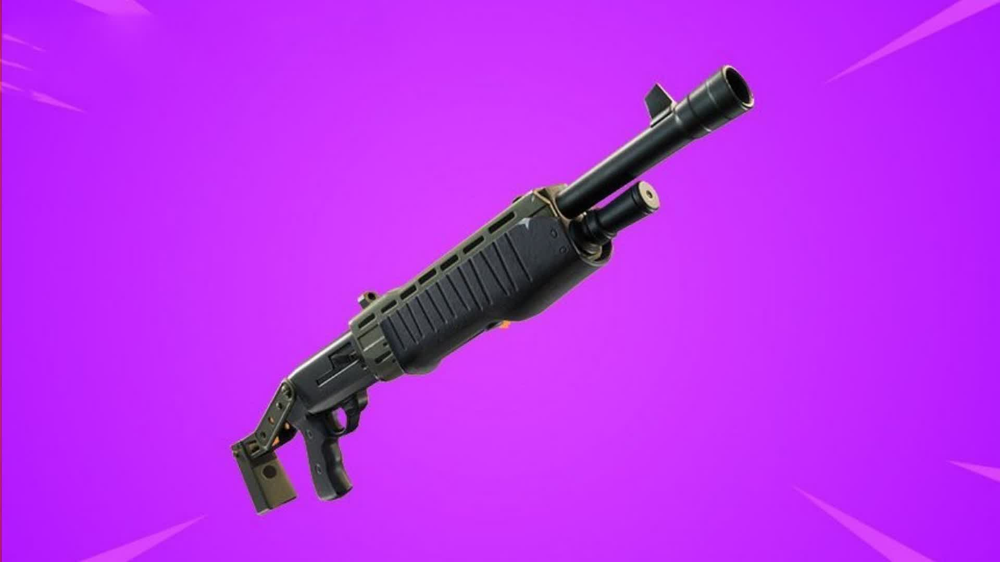

La Escopeta Pump es considerada por gran parte de la comunidad como una de las mejores armas en la historia de Fortnite. Desde sus primeras apariciones se convirtió en la opción favorita de los jugadores debido a su increíble capacidad para infligir grandes cantidades de daño en un solo disparo.
Su principal característica es el enorme daño que puede causar a corta distancia. Un disparo preciso a la cabeza puede eliminar rápidamente a un rival, lo que la convierte en una herramienta extremadamente poderosa durante los enfrentamientos más intensos.
A diferencia de otras escopetas, la Pump requiere una buena puntería y una correcta sincronización entre disparos. Esto hace que los jugadores más experimentados puedan aprovechar todo su potencial y dominar los combates cercanos.
Gracias a su equilibrio entre riesgo y recompensa, esta arma ha sido protagonista de innumerables jugadas memorables y continúa siendo una de las escopetas más queridas por la comunidad de Fortnite.
Puede causar cantidades muy altas de daño con un solo disparo bien colocado.
Premia la habilidad y la puntería de los jugadores más experimentados.
Es una de las escopetas más recordadas y utilizadas en la historia del juego.